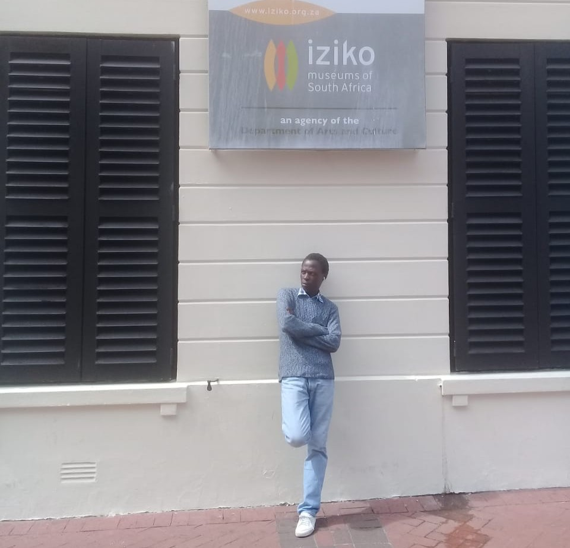
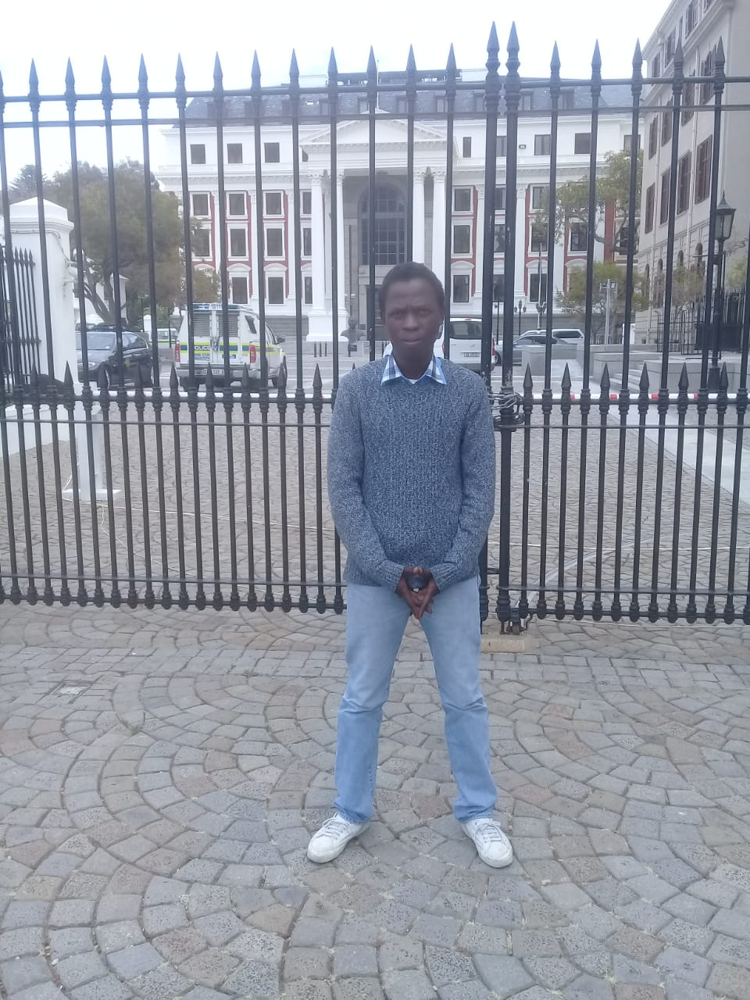
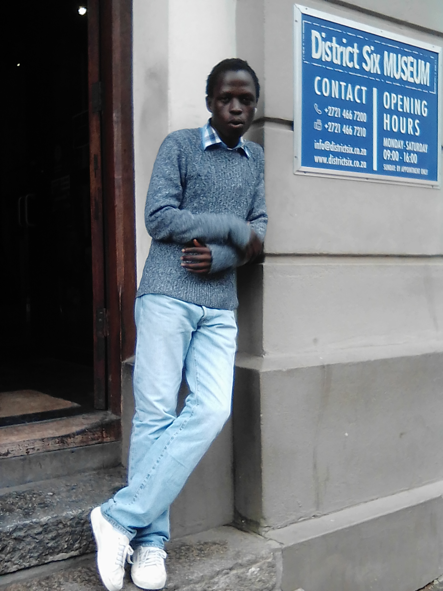

Qatar State has experienced significant economic growth. Continuing economic growth has helped to make Qatar one of the world’s richest nations. Revenue generated from oil and natural gas reserves makes Qatar residents the second-highest earners in the world. There are numerous banks in the state including commercial banks, foreign banks, and the Qatar Central Bank.Qataris eat their main meal of the day at lunchtime. Karak tea is served after meals; the rich milky tea is laced with Cardamom. The Friday midday meal, after prayers, is usually a time for the whole family to get together. The “Thoub” is the traditional costume worn by Qatari men. The Thoub is a long white shirt that is worn over boxer style shorts or long white cotton trousers. As a matter of pride, all Thoubs must be immaculately laundered.Qatari women wear a long black cloak known as an Abaya. Traditional Qatari females wear a djelabia or a dress under the cloak
| English Phraise | French |
|---|---|
| Please feel at home | veuillez vous sentir chez vous |
| Good day everyone | bonne journée tout le monde |
| Welcome home | Bienvenue à la maison |
Iziko Museums aspires to follow certain values that will ensure the protection of South Africa's heritage for the benefit of future generations.The South African Museum houses more than one and a half million specimens of scientific importance.The name Iziko, an isiXhosa word, meaning 'hearth', is intended to embody the spirit of a transformed institution.
National Assembly of South Africa. The National Assembly is the lower house of the Parliament of South Africa, located in Cape Town, Western Cape Province.The Houses of Parliament of South Africa are situated in Cape Town.Leader of the Lok Sabha, the Lower House of the Indian Parliament, is the Prime Minister by default if they are a member of the Lok Sabha
IIt was named the sixth district of Cape Town in 1867.It was the city's sixth municipal district.It was originally a mixed community of freed slaves, merchants, artisans, labourers and immigrants.
